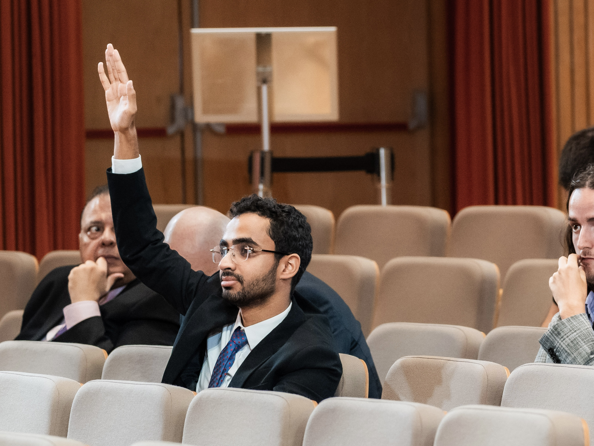

From Youth Agency to Institutional Action
Kranjska Gora & Bled, Slovenia • August to September 2026 • Featuring Mohamed Naguib, Founder & Chairperson
Young Leaders at Young BSF
Participants at BSF 2026
Delegations Represented
International Speakers
What does it mean for young people to participate in international dialogue when the challenges they work to address are shaped by institutions, decisions, and systems that extend far beyond their communities?
For youth-led organizations, representation is an opportunity to engage with this question from a different vantage point. It brings community-level experience into closer conversation with the broader forces that influence how societies respond to uncertainty, allocate resources, and pursue sustainable development.
In August and September 2026, Balanced Egypt's Founder and Chairperson, Mohamed Naguib, represented the organization at Young Bled Strategic Forum and the subsequent Bled Strategic Forum in Slovenia. Across the two connected but distinct programmes, the discussions offered a wider context for examining the relationship between agency, institutional resilience, and the capacity to turn shared concerns into meaningful action.

From Agency to Resilience
Held in Kranjska Gora from 28 to 30 August, the 15th Young Bled Strategic Forum brought together 43 emerging leaders aged 18–35 under the theme After the Rupture: Agency and Resilience in a Fragmented World.
Its programme examined how individuals, institutions, and societies respond to disruption, including challenges involving democratic resilience, disinformation, emerging technologies, critical raw materials, and the future of the Euro-Atlantic order.
Young BSF
28–30 August 202643 Emerging Leaders • Kranjska Gora
Bled Strategic Forum
31 Aug – 1 Sept 20262,000+ Participants • Bled
The main Bled Strategic Forum followed on 31 August and 1 September under the theme The Power to Shape the Future. The 21st edition brought together more than 2,000 participants, 444 delegations, and 135 speakers, according to the Centre for European Perspective. Its agenda addressed a changing geopolitical landscape, including international security, European cooperation, economic competitiveness, and technological development.
Other sessions examined water scarcity and cooperation, dependencies in the green transition, public-sector capacity, and artificial intelligence's implications for democracy. Taken together, the two programmes approached the future not simply as something to anticipate, but as something shaped by decisions about power, responsibility, cooperation, and institutional capacity.
Where International Dialogue Meets Sustainable Development
For Balanced Egypt, these questions connect to a practical challenge at the heart of its work: sustainable development requires more than public awareness. It also requires an understanding of the systems within which individual and collective choices take place.
The organization's work in food-waste awareness, community engagement, and youth-led initiatives starts with tangible challenges. Yet the conditions surrounding those challenges extend beyond individual behaviour. Food waste, for example, is connected to how food is produced, distributed, consumed, and managed, making lasting progress dependent on both community participation and wider institutional responses.
This is why discussions about resources, governance, and implementation are relevant to Balanced Egypt's broader mission. The connection is not that food waste was a central theme of the Forum. Rather, it lies in the underlying question of how societies build the capacity to respond to interconnected challenges.
Representation is a Starting Point, Not an Outcome
The significance of youth participation cannot be measured solely by whether young people are present in international conversations. It also depends on whether their perspectives have meaningful opportunities to inform the questions being asked and the decisions being considered.
"The value of representation lies partly in the questions it makes possible, and partly in what organizations subsequently do with the perspectives gained."
Young Bled Strategic Forum provides a dedicated space for emerging leaders to exchange perspectives on international affairs and consider how they can exercise agency in a fragmented world. Its connection to the main Forum creates an additional opportunity for youth perspectives to encounter a wider strategic-policy discussion.
Yet participation and influence remain distinct. Attendance alone does not demonstrate that a participant shaped a decision, changed a policy, or established an institutional partnership. For youth-led organizations, this distinction matters. Their contribution can extend beyond articulating the concerns of younger generations to bringing community experience into wider discussions, examining the conditions that enable implementation, and asking how international priorities remain connected to local realities.
Carrying the Questions Forward
For Balanced Egypt, participation in these programmes forms part of a broader engagement with the relationship between youth action and the systems that shape sustainable development.
International dialogue does not replace community-level work, nor does participation in a forum constitute an impact in itself. The challenge is to maintain a meaningful connection between the two: bringing local experience into wider conversations while ensuring that those conversations remain relevant to the practical work of addressing shared challenges.
Guided by its slogan, Youth Choose Balance, Balanced Egypt approaches sustainable development through youth engagement, public awareness, partnerships, and action. Its continuing work involves connecting individual choices with the institutional and collective conditions that influence their consequences.